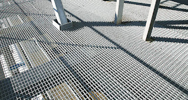
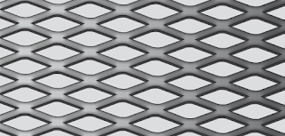

Jual Atap Lengkung di Metro ☎ ??? (www.dis.or.id)
Pernahkah anda melihat bangunan tanpa atap? Tentu pernah bukan? Bangunan tanpa atap hanyalah bangunan yang terbengkalai dan tidak diurus oleh pemiliknya. Namun, bagaimana dengan bangunan kecil, sedang maupun besar? Jangan khawatir tentang hal tersebut, banyak sekali jenis atap yang dapat anda jadikan sebagai referensi pilihan atap bagi bangunan yang anda bangun. Atap seperti halnya namanya membutuhkan rangka dan atap utama sebagai bahan penutup sebuah bangunan. Ini dikarenakan setiap bangunan tentunya membutuhkan atap sebagai penutup bagian atas. Jadi simaklah baik-baik apa saja yang akan saya ulas dalam artikel berikut ini.
Distributor & Supplier Atap Lengkung

Salah satu bagian penting pada bangunan baik untuk rumah, kantor maupun toko adalah atap lengkung Metro. Ya, atap lengkung Metro sangatlah dibutuhkan untuk setiap bangunan yang dibangun oleh manusia. Masing-masing atap lengkung mempunyai keunggulan dan kelemahan sendiri.
Bentuk dari setiap atap tersebut sangat beragam. Salah satu jenisnya adalah atap lengkung Metro. Sehingga membuat jenis atap lengkung tersebut mempunyai kelebihan dan kekurangannya sendiri.
Atap lengkung biasa dapat anda temukan pada bangunan-bangunan yang dibuat untuk keperluan olahraga. Maka sudah pasti bahwa kualitas atap lengkung Metro tersebut sangat diragukan. Atap galvalum yang satu ini mempunyai bentuk yang sangat unik. Anda sudah berada di tempat yang tepat. Cukup hubungi kontak yang tertera pada dis.or.id dan dapatkan harga terjangkau untuk anda.
Info Pemesanan Selengkapnya
Google Maps: https://www.google.com/maps/d/u/0/viewer?mid=1jTQUf9ULWdUIa8iDLwabVtcOdrQf8Eme&ll=-7.272623401464149%2C112.6482284&z=17
Note: https://www.facebook.com/notes/distributor-of-industrial-supply/pabrik-supplier-atap-lengkung/1782710675362145/
Event: https://www.facebook.com/events/137280070316926/
Portfolio Produk: https://www.facebook.com/pg/DistributorOfIndustrialSupplyDIS/photos/?tab=album&album_id=1683772021922678
Distributor & Supplier Besi Beton

Karena perkembangan suatu proses pembangunan maka hasil bola material yang dapat mendukung pembangunan tersebut agar terlihat lebih kokoh dan juga awet. Besi beton ulir yaitu besi beton dengan bentuk permukaan khusus bentuk sirip melintang seperti ikan ataupun dengan rusuk memanjang dan memiliki pola tertentu yang dipilih pada proses produksinya. Anda bisa mendapatkan jenis beton berkualitas dengan membeli di berbagai tempat namun tak semua tempat memberikan kualitas besi yang terbaik. Maka dari itu anda harus selektif untuk menentukan besi beton mana yang sesuai dengan yang anda inginkan.
Besi beton terkenal sebagai bentuk besi yang memiliki kekuatan besar dan tahan terhadap berbagai guncangan dan tekanan.
Segera kunjungi dis.or.id untuk mendapatkan besi beton yang anda inginkan. Di sana anda akan mendapatkan berbagai macam jenis serta ukuran dari besi beton dengan harga yang cukup terjangkau dan mutu yang sangat terjamin. Jadi, anda tidak perlu ragu lagi.
Distributor & Supplier Steel Grating

Steel Grating kini dikenal sebagai salah satu produk yang bermanfaat untuk proses pembangunan. Steel grating sangat aman untuk digunakan pada beberapa kontruksi bangunan. Perlu diketahui, bahwa grating ini merupakan plat besi yang dibuat dari rangkaian besi dan plat strip. Grating ini disusun dari baja berkalit dan dilas di bagian permukaan silangnya. Di mana, Galvanis ini melindungi grating dari korosi maupun karat. Dengan mencaro steel grating kualitas terbaik, pastinya kualitas bangunan yang anda bangun akan lebih kokoh dan tahan terhadap berbagai cuaca.
Maka dari itu, jika anda membutuhkan steel grating untuk keperluan pembangunan, anda bisa langsung saja mengunjungi dis.or.id. Terdapat beberapa ukuran yang bisa anda pesan sesuai dengan kebutuhan pembangunan anda.
Distributor & Supplier Pipa (Hitam/Gas, Galvanis)

Manfaat dari pipa hitam galvanis memang banyak sekali untuk kebutuhan konstruksi bangunan. Karena kekuatan yang dimiliki olehnya, tak heran bila pipa hitam banyak digunakan pada kebutuhan konstruksi. Karena telah terlapis dengan material stainless steel pipa ini jadi tahan karat dan korosi, sehingga dapat anda aplikasikan untuk segala kondisi cuaca di Indonesia. Segera hubungi kami untuk info pemesanan selengkapnya maupun berkonsultasi mengenai kebutuhan pipa secara langsung.
Distributor & Supplier Kawat Bronjong/Gabion

Kawat bronjong dikenal sebagai anyaman yang terbuat dari kawat di mana tujuannya agar tebing yang tinggi tidak longsor. Hal ini disebabkan kawat ini dilapisi dengan galvanis. Ini berbentuk seperti anyaman yang terbuat dari kawat biasa. Pasalnya, jika kawat berkarat, maka kawat mudah putus dan rusak. Kawat ini terbuat dari baja. Kawat ini berfungsi agar tidak terjadi gerusan akibat arus air yang mengakibatkan tiang penyangga rusak di mana hal ini bisa berakhir dengan rubuhnya jembatan. Kawat bronjong ini juga bisa berfungsi sebagai pengaut tebing miring di mana di atas tebing tersebut mungkin terdapat bangunan atau jalan.
Kawat bronjong kini dapat anda temui dan dapatkan dengan mengunjungi dis.or.id. Jika anda tengah membutuhkna kawat ini, anda bisa saja langsung mengunjungi dis.or.id.
Distributor & Supplier WF H-beam
.jpg)
Saat ini, jenis besi WF memang banyak dicari. Terlebih saat ini zaman sudah serta praktis dan mudah. Kekuatan dari besi ini sangat besar dan padat serta kuat dengan daya tekan dan tarik yang tinggi. Untuk membuat bangunan seperti rumah, pagar, industri, jalan raya, pabrik, dan lain-lain Anda bisa memakai jenis besi ini. Sungguh mudah bukan?
Maka dari itu, kualitasnya sudah terjamin. Besi ini tergolong jenis besi yang ringan disertai dengan komponen yang sesuai sehingga Anda tidak perlu keberatan saat memakai jenis besi ini.
Kini anda bisa mendapatkan besi WF dengan berbagai ukuran tentunya dengan harga yang sangat terjangkau. Harga yang di patok juga sangat terjangakau, jadi anda tidak perlu mengeluarkan budget terlalu banyak. Disana anda bisa mendapatkan besi wf yang anda inginkan.
Distributor & Supplier Expanded Metal

Expanded metal ini bisa dibilang sebagai hasil dari kemajuan teknologi yang terbuat dari baja berkadar karbon rendah dengan kekuatan yang lebih tanpa harus di las serta tanpa menggunakan sambungan. Dimana Expanded Metal ini dibuat dengan menggunakan baja berkadar karbon rendah tanpa di las, tanpa sambungan dan dikenal lebih kuat. Sedangkan untuk keunggulannya sendiri adalah memiliki bentuk yang indah dan juga homogen, lebih vareatif dalam hal pengaplikasiannya, relatif lebih ringan, dan lebih mudah dipasang. Umumnya dipergunakan sebagai partisi pengaman gudang, railing, pelindung mesin, pagar penjara, plafond, dan lain sebagainya.
Kini anda bisa mendapatkan expanded metal dengan kualitas dan mutu yang telah terjamin di dis.or.id. Terdapat berbagai macam ukuran expanded metal dengan banyak keunggulan yang bisa anda rasakan ketika mengaplikasikannya langsung pada bangunan anda. Kunjungi dis.or.id untuk memesan expanded metal dengan harga yang murah serta mutu yang terjamin.
Distributor & Supplier Plat (Hitam, Kapal, Bordes, Strip)

Berbicara tentang plat besi memang beragam, hal ini di tentukan dari seberapa besar dan tebal plat yang di inginkan. Plat besi bordes juga dikenal dengan checkered plate. Harga plat besi bordes, strip dan plat besi lainnya sangat terjangkau per meter persegi. Karena dis.or.id adalah distributor pertama yang langsung mengambil barang dari pabrik. Plat besi memang ada yang tipis dan tebal, perihal ukuran ini akan kita sampaikan secara detail pada topik yang berbeda.
Kualitas yang diberikan sudah terjamin dan bisa anda buktikan sendiri. Anda pastinya tidak akan rugi jika membeli plat besi dengan banyak varian dan jenis yang disediakan disana.
Distributor & Supplier Floor Deck (Bondex)

Anda yang punya rencana pembangunan dan membutuhkan material untuk pengecoran lantai mungkin bisa menggunakan floor deck. Biasa di gunakan sebagai alas dalam proses pembuatan lantai dan atap dak beton. Produk material ini berfungsi untuk menggantikan fungsi bekisting pada saat melakukan pengecoran plat pada lantai. Pemakaian dari floor deck juga bisa membuat proses pengerjaan dan pembuatan dak menjadi lebih mudah, cepat dan efisien.
Jika anda saat ini sedang mebutuhkan floor deck dengan kualitas yang mumpuni, anda bisa langsung mengunjungi situs dis.or.id. Anda juga bisa langsung memesannya ataupun hanya ingin mengetahui detail harga yang di patok dari floor deck tersesbut. Pastinya dengan harga yang sangat terjangkau dan dengan mutu terbaik.
Distributor & Supplier Atap Galvalum

Pada kesempatan ini, kami akan menjelaskan pengertian dari atap seng galvalum. Atap galvalum mempunyai komposisi tertentu sehingga menyebabkan atap galvalum tersebut lebih kuat dan awet jika dibandingkan dengan bahan baja ringan lainnya.
Akan tetapi kelebihan kayu bila dibandingkan dengan atap galvalum adalah kayu memiliki nilai yang lebih tinggi daripada galvalum.
Besar kecilnya galvalum tergantung pada kebutuhan anda. Namun, banyak anggapan yang mengatakan bahwa memasang galvalum akan membuat rumah akan terasa panas dan berisik. Jika dalam segi harga, kayu memang lebih murah.
Distributor & Supplier Truss Canal C
Anda pasti mengetahui bahwa truss atau besi kanal c ini tahan terhadap rayap. Besi kanal C sebutan untuk besi yang satu ini. Dengan penggabungan galvalum dengan besi kanal c maka sebuah bangunan bisa menjadi lebih kuat dan berkualitas. Sehingga gabungan keduanya menghasilkan kualitas yang bila ditandingkan dengan bahan gabungan lain maka tidak akan kalah berkualitasnya. Besi kanal C bisa menjadi pilihan yang tepat bila anda ingin membangun rumah minimalis dengan desain modern. Pilihan ini amatlah tepat mengingat bahwa besi ini sangat melengkapi kekurangan dalam pembangunan rumah minimalis tersebut. Lebih baik jika anda merencanakan semuanya dengan perhitungan yang benar dan tidak asal-asalan. Bila anda mencari besi kanal c dengan kualitas tinggi namun harga terjangkau maka anda sudah datang ke tempat yang tepat.
Distributor & Supplier Hollow Galvalum

Seperti yang telah saya tuliskan di beberapa artikel, salah satu fungsi dari Hollow Galvalum adalah sebagai rangka plafon atap rumah. Penggunaan besi ini sebagai rangka atap rumah sudah mulai banyak digunakan dalam beberapa tahun terakhir ini. Untuk memudahkan pemasangan atap, tentunya diperlukan hollow galvalum yang berkualitas bukan?
Selain dinilai lebih kuat, ternyata juga lebih ekonomis. Dengan berbagai keunggulan tersebut hollow galvalum mampu menggeser keberadaan kayu sebagai rangka atap bangunan. Dengan banyaknya cabang supplier kami dapat menjangkau pengiriman sampai ke pelosok Indonesia.
Distributor & Supplier Seng Gelombang

Seiring perkembangan jaman, seng gelombang mengalami peningkatan dari waktu ke waktu. Baik itu bangunan besar dan kecil, tanpa atap yang berkualitas maka bangunan tersebut rentan kebocoran. Seng gelombang adalah salah satu solusi yang kami rekomendasikan untuk anda. Ia lebih mudah di pasang dan harga jual yang ekonomis dipasaran membuat seng gelombang memiliki banyak peminat. Saking pentingnya, pasti dimana ada bangunan maka disitu ada atap yang menaunginya. Walaupun begitu, harga jual seng gelombang warna masih ekonomis dan pas dikantung untuk anda yang ingin menghemat pengeluaran pembangunan.
Seng gelombang sekarang ini diburu banyak masyarakat untuk menutup bagian atap bangunan mereka. Jika anda membutuhkan seng gelombang kecil ini sekarang juga, maka segera hubungi kami di dis.or.id untuk kepentingan lebih lanjut.
Distributor & Supplier Plat Seng

Biasanya plat galvanis dijual lembaran atau per meter. Selain itu manfaat dan kelebihan yang dimiliki jauh lebih banyak dari seng biasa.
Banyak orang yang selama ini hanya membeli seng galvalum tanpa mengetahui ukuran yang sesuai dengan kebutuhan nya. Plat seng dan plat galvalum banyak digunakan untuk berbagai kebutuhan, dari kebutuhan pembangunan rumah, industri, pabrik dan berbagai kegunaan lainnya. Berbicara tentang plat seng maka tentu tidak lepas dengan galvalum dan galvanis, yang merupakan jenis plat seng paling berkualitas. Silakan kunjungi dis.or.id, situs tentang distributor industri ini memuat banyak sekali manfaat untuk anda.
Oleh karena itu, peran atap pada sebuah rumah sangatlah penting.
Distributor & Supplier Genteng Metal

Genteng metal banyak dipilih karena memang lebih tahan lama, anti bocor, tidak berjamur, kesan yang diberikan pada atap rumah menjadi elegan dan indah selain itu juga karena harga yang lebih ekonomis. Sebelum itu, kami akan menjelaskan apa itu genteng metal dan genteng metal pasir. Kami siap melayani pembelian dalam jumlah kecil ataupaun partai besar untuk tiap tiap brand tersebut. Selain itu genteng metal dinilai lebih anti bocor. Dengan berbagai keunggulan yang sudah saya jabarkan diatas, maka apalagi yang anda tunggu untuk mendapatkannya? Segera dapatkan genteng metal tersebut di official situs kami di dis.or.id dan dapatkan penawaran menarik. Genteng metal dinilai lebih praktis dan lebih awet.
kami berusaha mencari kepuasan pelanggan kami. Karena kepuasan dan kepercayaan pelanggan adalah segalanya bagi kami.
Distributor & Supplier Besi Wiremesh

Besi wiremesh merupakan besi lembaran panjang yang disusun rapi sampai membentuk anyaman. Besi wiremesh sering di anggap banyak orang adalah besi anyam karena strukturnya yang mirip dengan anyaman. Bentuk anyaman dari besi wiremesh sendiri bermacam-macam, ada yang membentuk kotak-kotak ada juga yang jajar genjang, anda dapat memilih sesuai kebutuhan. Dengan memiliki bentuk yang mirip seperti besi anyam, pemanfaatan besi ini sangat banyak terutama dalam dunia konstruksi, salah satunya adalah sebagai plat lantai dan dak beton. Tentu saja, tidak semua kebutuhan besi wiremesh bisa menggunakan jenis yang sama. Untuk ketebalan besi wiremesh 8 – 10 adalah peruntukkan untuk bangunan bertingkat. Sedangkan untuk kebutuhan bangunan biasa menggunakan jenis wiremesh ukuran 4 sampai 6 sudah cukup kuat. Kami disini menawarkan besi wiremesh dengan kualitas terbaik, di produksi dengan sistem las otomatis sehingga kuat dan susunannya rapi. Untuk informasi lebih detail, anda dapat menghubungi kontak yang telah tersedia.
Distributor & Supplier Pagar BRC

Potongan besi berdiameter tersebut kemudian digabungkan menjadi satu menggunakan mesin las wiremesh. Pemanfaatan pagar BRC sendiri tergolong sebagai pagar minimalis yang siap digunakan untuk melindungi sebuah bangunan. Kekuatannya pun tidak dapat diragukan lagi karena ia dibuat dengan baja yang bertegangan tinggi, U55 grade dan tegangan ijin 2900kg/cm2. Apalagi pagar BRC telah terlapisi dengan galvanis yang membuatnya tahan karat dan bertahan hingga 10 tahun ke atas, anda bisa aplikasikan pagar BRC ini di daerah korosif sekalipun. Jika Anda membutuhkan pagar BRC ini segera kunjungi situs resmi kami untuk informasi lebih detail. Bagi anda yang membutuhkan pagar BRC anda dapat menghubungi kami untuk informasi pemesanan.
Distributor & Supplier Kawat Loket, Kawat Harmonika

Untuk kebutuhan kawat penyekat, kawat pagar, maupun penutup jendela anda bisa manfaatkan jenis kawat loket harmonika karena strukturnya yang kuat dan membentuk seperti anyaman. Dengan bentuknya seperti anyaman yang kokoh, anda dapat memanfaatkan kawat loket harmonika untuk berbagai keperluan. Jika dilihat dalam kehidupan sehari-hari kawat harmonika banyak diaplikasikan untuk kebutuhan industri, konstruksi, rumahan, dan lainnya. Apalagi bila jenis kawat harmonika yang digunakan adalah galvanis yang terkenal tahan karat maupun korosi sehingga sangat awet. Untuk informasi selengkapnya, anda dapat menghubungi kami, terlah tersedia kawat loket harmonika dengan diameter 1,5 mm – 4 mm, disertai lubang 20 mm sampai 70 mm tergantung dengan kebutuhan anda.
Distributor & Supplier CNP & UNP

Besi yang sering diaplikasikan untuk keperluan sambungan dan dudukan atap adalah besi kanal UNP, bentuk besi ini melengkung dan membentuk huruf U. Besi UNP juga cocok diaplikasikan untuk kebutuhan girts / penutup dinding. Besi UNP sebenarnya memiliki spesifikasi yang hampir sama dengan wide flange, hanya saja besi UNP mudah menekuk sehingga sangat jarang digunakan sebagai kolom bangunan. Besi UNP juga sering dikaitkan dengan besi CNP yang juga masuk dalam kategori kelasnya. Besi CNP memiliki bentuk yang hampir mirip dengan huruf C sehingga ia sering disebut sebagai profil C / balok purlin. Besi UNP dan CNP sangat fleksibel mengingat ia dapat dimodifikasi dari plat koil menggunakan teknik cutting. Anda bahkan bisa menggunakan besi CNP untuk memenuhi keperluan industri dalam bidang otomotif.
Distributor & Supplier Besi Siku

Setiap konstruksi bangunan pasti menggunakan material konstruksi besi siku ini untuk kebutuhan bagunan. Besi siku memiliki bentuk siku yang sudah didesain khusus sehingga kuat bila digunakan sebagai besi penyangga. Dengan bentuk kedua sisinya yang tegak lurus, anda bisa manfaatkan besi ini untuk keperluan rumah tangga ataupun furniture. Untuk panjangnya, kebanyak besi siku dibuat dengan ukuran maksimal 6 meter dengan ketebalan dan panjang sisi sesuai kebutuhan. Kami menerima segala kebutuhan anda mengenai besi siku ini! Tentu saja produk yang kami tawarkan berkualitas unggul. Besi siku dapat anda manfaatkan untuk beragam kebutuhan konstruksi, bangunan, furnitur, dan lainnya. Butuh informasi lebih lengkap lagi? Kunjungi saja situs resmi kami di www.dis.or.id Informasi lebih detail akan anda dapatkan dengan menghubungi kontak yang tertera pada website dis.or.id.
Distributor & Supplier Hollow (Hitam, Galvanil, Galvanis)

Apalagi jika mengingat menggunakan besi hollow akan membuat pengerjaan konstruksi selesai lebih cepat. Tentu saja hal ini karena kelebihan yang ditawarkan oleh besi hollow sendiri tidak dimiliki kayu, material yang kokoh, pengerjaan cepat, dan tidak mudah rapuh. Tentu saja hal ini dikarenakan kekuatan yang dimiliki hollow galvanis tidak bisa dibandingkan dengan kayu, material ini juga lebih mempercepat pembangunan konstruksi. Besi hollow memiliki kekuatan yang lebih kokoh dan dapat mempercepat pekerjaan konstruksi karena strukturnya yang mudah diatur. Dis.or.id pun telah menyediakan produk besi hollow hitam galvanis ini untuk dapat anda pesan langsung! Tersedia ukuran besi hollow 40 x 40 x 2 mm x 6 Meter, 50 x 50 x 3 mm x 6 Meter hingga ukuran 150 x 150 x 5 mm x 6 meter dan masih banyak lagi. Manfaat besi hollow dalam kehidupan ini banyak sekali, diantaranya untuk keperluan pagar, teralis, pintu besi, dan berbagai kebutuhan lain. Butuh info lebih lanjut? Anda dapat menghubungi kontak yang telah tersedia. Untuk informasi detail mengenai panjang dan harganya, segera hubungi kami. Anda bebas untuk menentukan ukuran pesanan besi hollow yang dibutuhkan pada kami. Untuk itu hubungi kontak kami segera!
Distributor & Supplier Pipa Pancang

Kalau membahas pipa pancang, tentu saja salah satu konstruksi penting dalam sebuah proyek ini sudah banyak di kenal. Apalagi dengan fungsinya yang semakin memudahkan pemasangan. Terutama bagi Anda yang sedang membangun proyek di atas permukaan laut, tentu saja ini akan sangat membantu. Sedangkan dari segi spesifikasi, pipa pancang tersedia dalam berbagai ukuran. Hal ini bertujuan untuk memudahkan penyesuaian. Nah, bagi Anda yang sedang membutuhkan pipa pancang, jangan khawatir karena Anda bisa mendapatkannya dengan mudah. Terutama untuk memilih produk DIS. Di sini Anda akan mendapatkan pipa pancang berkualitas yang siap di gunakan.
Jasa Pondasi Bor (Strouss/Borepile)

oleh karena itu, jika Anda ingin menggunakan jasa pengeboran, tidak dapat di pungkiri lagi bahwa hal itu akan sangat membantu sebagai solusi. Bahkan tidak perlu jauh-jauh karena di sini juga menerima pemesanan jasa tersebut. Jika mengenal pengeboran lebih jauh, sebenarnya ada dua jenis yakni manual dan otomatis dengan penggunaan mesin. Yakni pengeboran manual atau yang otomatis dengan menggunakan mesin. Sebenarnya, jika selain Anda menggunakan jasa pengeboran, Anda pun bisa membeli mesin bor sendiri. sedangkan dari segi kualitas pun keduanya tidak jauh berbeda.
Distributor & Supplier Genset (New/Second)

Genset atau generator set yang menghasilkan tenaga listrik kini telah banyak di gunakan sebagai alternatif. genset ini merupaka produk yang menggunakan bahan bakar solar sehingga bisa menghasilkan tenaga listrik. Sedangkan untuk pembelian, memang ada genset yang masih dalam kondisi baru mapun genset yang sudah bekas atau second. Untuk keduanya pun bisa Anda beli di DIS.
Dengan harga genset yang cukup tinggi, memang akan lebih ringan jika membeli genset yang sudah second. Hal ini pun menjadi sebab banyak yang lebih memilih pembelian genset yang bekas. genset sendiri tersedia dalam berbagai pilihan merk sesuai perusahaan yang mengeluarkan nya dan bisa Anda jadikan pilihan mana yang sekiranya paling sesuai.
Distributor & Supplier UPS

Kalau menyebut UPS, mungkin akan banyak yang bertanya-tanya sebenarnya apa sih barang yang satu ini. Terkecuali jika membicarakan dunia elektro. Sebenarnya bisa di akui bahwa memiliki nya sangatlah penting. Dalam hal ini tentu cukup penting memilikinya. UPS ini terdiri dari beberapa jenis. Bukan hanya kualitas spesifikasi yang berbeda, akan tetapi juga kapasitas listrik yang bisa di simpan. Karenanya, ketika Anda membeli UPS ini, sebaiknya memastikan terlebih dahulu seberapa besar kapasitas yang Anda butuhkan. Kalau untuk penjualannya sendiir, bisa di dapatkandi DIS dengan kualitas yang sangat memadai. Sedangkan dalam penjualan, di sini kami menawarkan UPS dengan kualitas terjamin dan harga memadai.
Distributor & Supplier Forklift (Second)

Kini forklif memang cukup banyak di gunakan baik dalam industri kecil, menengah maupun besar. Jika tidak ingin yang baru pun Anda bisa memilih forklif yang di jual bekas. Nah, dengan kualitas yang bagus ini, maka forklif akan membuat aktivitas industri Anda menjadi lebih mudah dalam berbagai hal. Jika sudah mengetahui kualitasnya yang terjamin tersebut, tentu saja segala aktifitas industri akan menjadi semakin mudah lagi.
Jasa Pembuatan Moulding Inject

Jika Anda sedang ingin membuat kemasan plastik, maka Anda tidak perlu khawatir karena saat ini telah banyak tersedia jasa yang bisa membantu Anda. bahkan kalau berbicara kualitas hasilnya di sini, bisa di pastikan akan sangat bermutu. Selain itu berapa pun kebtuhan Anda, pasti bisa di layani. Bukan hanya masalah kuantitas akan tetapi juga untuk kualitasnya. Anda tidak perlu khawatir terkait hal itu karena moulding inject yang di hasilkan pun juga merupakan kualitas yang terbaik. Tinggal menyesuaikan saja dengan bagaimana kebutuhan untuk produknya sehingga pencetakan yang di lakukan bisa menghasilkan bentuk yang tepat.
Jasa Pembuatan Sparepart Mesin Produksi / Alat Berat

Dalam setiap proyek pembangunan, adanya alat berat atau sparepart tentu bukanlah hal yang asing pula. Terlebih jika mengingat lebih jauh bahwa alat ini memiliki fungsi yang cukup penting sehingga membutuhkan perhatian tinggi dalam pembuatannya. Karena itulah, untuk memilikinya, silahkan Anda memilih jasa terpercaya di mana salah satunya di tawarkan di DIS. Apalagi mengingat dukungan tenaga profesional yang di sediakan sehingga sparepart Anda akan lebih aman. Terkait dengan hal itu, perlu Anda ketahui bahwa pembuatan sparepart yang salah, bisa jadi akan membahayakan si pengguna. Karena itulah di perlukan pembuatan yang tepat sehingga hasilnya sempurna dan bisa bekerja secara maksimal. Hal inilah yang membuatnya harus di produksi oleh jasa terpercaya sehingga akan semakin aman. Perbedaan harga tersebut bisa berdasarkan pada jenisnya yang berbeda maupun ukurannya.
Jasa Service Elektronik (Kompor Gas, Dispenser, Mesin Cuci)

Dengan semakin berkembanganya zaman, penggunaan elektro juga semakin banyak. Oleh karena itu, sebagai penyeimbang, tidak heran pula jika jasa service elektronik yang melayani perbaikan seperti kompor gas, dispenser dan mesin cuci terus bermunculan. Industri DIS sendiri juga menyediakan jasa sedemikian rupa. dengan demikian Anda kan semakin di untung kan sekaligus mendapatkan nilai ekonomis nya karena tidak harus berganti barang baru. Akan tetapi pada umumnya, orang-orang yang melakukan service elektronik adalah pada barang yang bermasalah. Selain untuk perbaikan, Anda pun bisa juga hanya melakukan pengecekan tanpa keluhan sebagaimana service pada umumnya.
Atap memang tidak diragukan lagi manfaatnya, bisa bayangkan bukan bila ada bangunan tak beratap. Hanya bangunan yang terbengkalai yang tidak mempunyai atap. Karena rumah paling kecil sekalipun pasti mempunyai atap di atasnya. Karena sebuah rumah tidak dapat disebut rumah tanpa atap diatasnya. Kunjungi dis.or.id untuk mendapatkan bantuan, info dan penawaran terbaik khusus untuk anda.